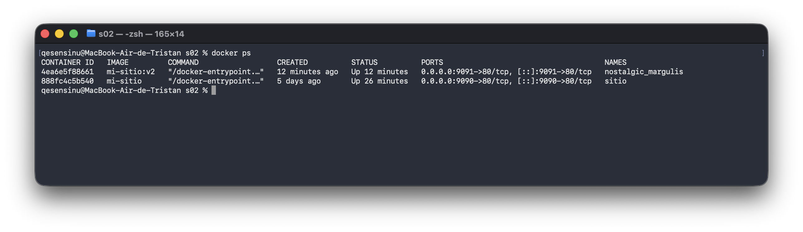

Mi pagina tendra los comandos que mas me sirvieron para realizar esta practica
docker ps -adocker start "nombre_contenedor"
docker stop "nombre_contenedor"docker build -t "nombre_imagen" .docker run [parametros] "nombre_imagen"docker rm "nombre_contenedor"
docker rmi "nombre_imagen"El motivo por el cual no se actualiza el contenedor cuando se cambia el index es porque solo hacemos una copia de un momento exacto del index para el contenedor, si queremos que este se actualice debemos volver a crear la imagen y arrancar el contenedor de nuevo.
